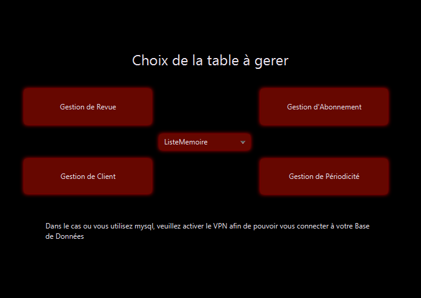
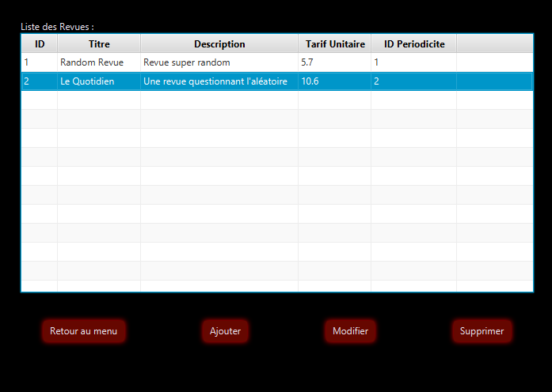
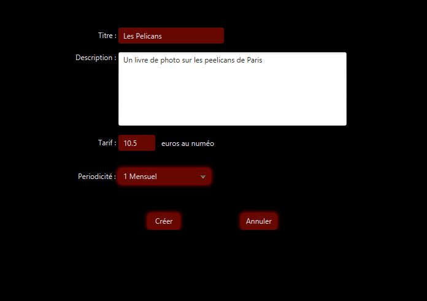

L'objectif de ce projet était de réaliser une application en Java avec une interface graphique en JavaFX
afin de pouvoir gerer des Revues, des Abonnements, des Periodes et des Clients.
Nous avions differents objectifs / contraintes :
- L'importation d'un fichier de Client au format CSV
- L'utilisation de DAO pour utiliser d'ature moyen de persistance
- Etre Performant et simple d'utilisation
L'interface qui a été conçu en JavaFX à l'aide de SceneBuilder se repartit en plusieurs parties.
En premier on a le menu qui permet de choisir le moyen de persistance ainsi que la table.

Ensuite nous avons la liste des éléments de la table choisie qui sont sélectionnable
afin de pouvoir les modifier, les supprimer ou bien simplement en ajouter d'autre.

Enfin, on a la partie création, qui est similaire à la partie modification.
Dans cette derniere on pourra saisir les informations correspondantes à la table choisie.
